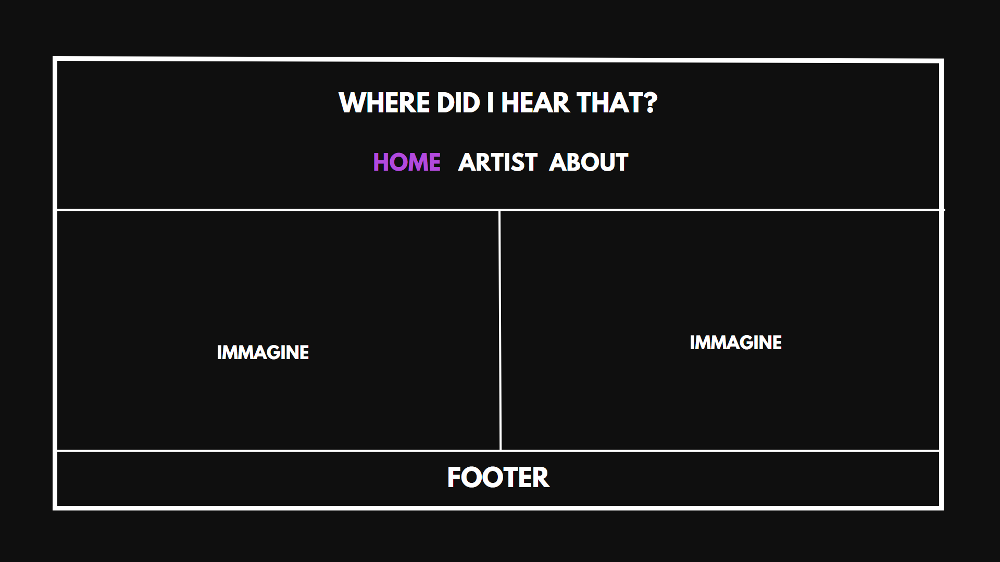
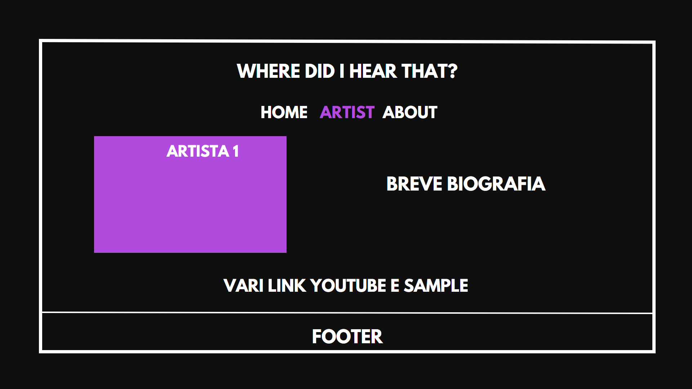
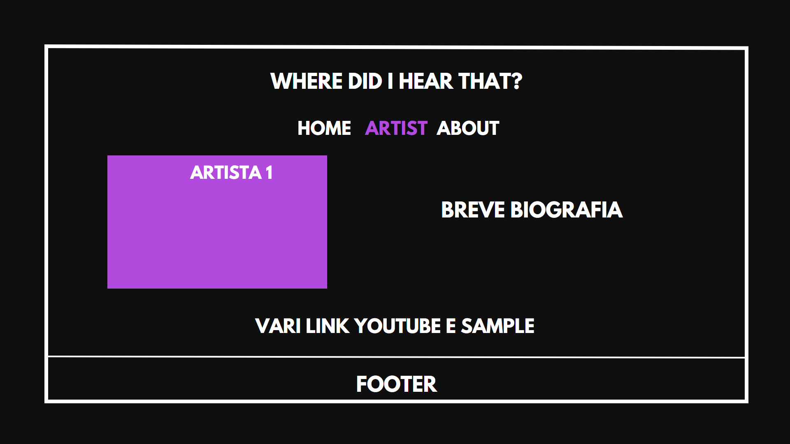
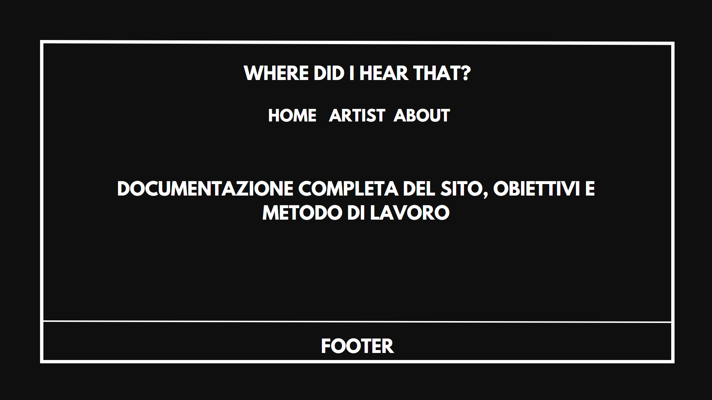
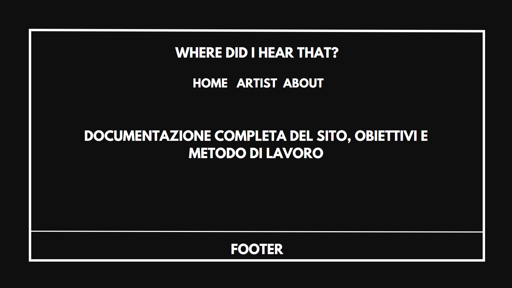

ABSTRACT
“Where did I hear that” è un progetto sviluppato da Jacopo Abbottoni e Ludovico Bovinelli, due studenti di Scienze della Comunicazione presso l’Università di Bologna. L’obbiettivo di questo progetto è di far scoprire ai fan della musica Hip-Hop a quali canzoni si sono ispirati i loro performer preferiti per realizzare alcune delle canzoni più famose del panorama musicale urban internazionale.
BENCHMARKING
OBIETTIVI:
Abbiamo creato il progetto con lo scopo di diffondere un certo tipo di cultura musicale a cui si ispirano i rapper e i cantanti dei giorni nostri, facendo sì che chi è interessato ad ampliare i propri gusti e i propri interessi possa farlo, partendo da ciò che già gli piace. Non sempre è facile trovare parti di canzoni utilizzati per la composizione di strumentali rap e hip-hop, anche online. Il sito è fatto in modo che l’utente possa contattare i creatori e chiedere se in una determinata canzone è presente un campionamento (sample) e a che minutaggio appare.
TARGET:
Siamo qui per soddisfare la vostra curiosità e guidarvi in un viaggio musicale emozionante e sorprendente.
Il nostro sito è dedicato a un pubblico principalmente giovane e appassionato, desideroso di:
- Esplorare l'immaginario musicale che ha ispirato gli artisti nella creazione delle loro canzoni;
- Ampliare i propri orizzonti musicali partendo da suoni familiari ma sconosciuti, aprendo le porte a nuove esperienze sonore.
COMPETITORS:
whosampled.com: è la banca dati di sample più conosciuta. A differenza di whosampled, il nostro sito ha l'obbiettivo di portare contenuti più specifici, selezionati dallo staff sotto suggerimento degli utenti, e soprattutto sul nostro sito è assente l'assidua pubblicità che invece è presente su whosampled.com.
STRUTTURA E LAYOUT
ARCHITETTURA:
La nostra architettura è intuitiva e significativa, poiché mira a garantire una fruizione fluida. Dedichiamo pagine ai singoli artisti e alle loro tracce, nonché ai sample che hanno ispirato il loro lavoro. Riteniamo che comprendere queste connessioni musicali sia fondamentale per un'esperienza coinvolgente e appagante. Navigare all'interno delle pagine è semplice e immediato grazie all'utilizzo delle frecce in fondo alla pagina.

WIREFRAME:
 

 

LOOK AND FEEL:
La nostra palette cromatica si ispira ai colori che solitamente caratterizzano il genere rap/trap: il nero e il viola.
Abbiamo curato attentamente i cambiamenti di pattern tra i tre colori, presenti nei titoli e nei pulsanti, per mantenere un aspetto coerente.
Per garantire una buona leggibilità, abbiamo scelto il font League Spartan.
Gli elementi della home sono posizionati strategicamente per catturare l'attenzione del lettore al centro della pagina, creando un punto focale che invita all'esplorazione, ci impegniamo inoltre a offrire un'esperienza visiva coinvolgente e accattivante.
LINGUAGGI E STRUMENTI
LINGUAGGI:
- HTML
- CSS
SRUMENTI:
- Canva (per tutta la parte grafica)
- Google font
- Google Analytics
- Favicon
- YouTube
- Spotify
- W3schools.com
BACKGROUND:
Esistono vari siti in cui è possibile trovare i diversi campionamenti utilizzati dagli artisti, tra cui il più noto è Whosampled.com.
Tuttavia, questo sito puòessere penalizzato da un'eccessiva presenza di pubblicità e da un layout poco intuitivo e confusionario.
Nel nostro sito, invece, abbiamo deciso di mettere in primo piano l'interazione diretta con la nostra community.
Vogliamo che gli utenti interessati al nostro progetto si sentano parte integrante di un gruppo con passioni simili.
Abbiamo fornito diverse opzioni di contatto per facilitare la comunicazione e la scondivisione di idee tra noi e gli utenti.
In questo modo, speriamo di creare un ambiente accogliente e collaborativo, dove gli appassionati di musica possano condividere le proprie scoperte e
coinvolgersi attivamente nel progetto.
OBIETTIVI COMUNICATIVI:
Il nostro sito offre un autentico spazio per gli appassionati di musica che desiderano approfondire e scoprire oltre il semplice ascolto. Qui potranno esplorare le varie canzoni e individuare le piccole parti che le rendono uniche e riconoscibili. La nostra intenzione è anche quella di suscitare la curiosità degli utenti e invitarli a esplorare le loro canzoni preferite alla ricerca dei diversi campionamenti al loro interno. Speriamo che il nostro sito possa ispirare altri appassionati a fare lo stesso. Inoltre, forniamo informazioni di contatto per coloro che desiderano collaborare con noi, migliorare il sito e aggiungere nuove canzoni.
TARGET AUDIENCE E MESSAGGIO:
Il sito "Where did I hear That?" è stato creato per soddisfare l'interesse e la curiosità di tutti coloro che sono appassionati di musica hip-hop e rap e che desiderano conoscere tutto ciò che sta dietro alla creazione di una canzone. Anche se è difficile determinare un target specifico, in generale il sito può interessare principalmente persone con un'età fino ai 30 anni. Tuttavia, riteniamo che possa suscitare interesse anche in un pubblico più ampio, compresi coloro che desiderano scoprire di più sul genere musicale al quale fa riferimento il proprio artista preferito e come si ispira per creare nuova musica. Per promuovere il progetto "Where did I hear That?", è importante focalizzare gli sforzi di marketing su una campagna pubblicitaria mirata sul web, al fine di far conoscere il progetto tra gruppi di appassionati specifici. Gli influencer nel campo della musica, i thread dedicati su Reddit, le pagine Instagram o i profili TikTok rappresentano i principali mezzi di comunicazione per avviare un passaparola riguardo al progetto. Attraverso queste piattaforme, è possibile raggiungere un pubblico interessato e fidelizzato, in grado di apprezzare e condividere l'obiettivo del sito. La promozione mirata su questi canali specializzati può risultare più efficace rispetto a una sponsorizzazione generica, poiché permette di intercettare direttamente gli appassionati di musica hip-hop e rap e coinvolgerli attivamente nel progetto.
PROMOZIONE:
Il sito sarà principalmente promosso su piattaforme social come Instagram, attraverso stories e pubblicazione del link in bio, e Whatsapp in varie chat e gruppi che rispecchiano il target del sito.
VALUTAZIONE DEI RISULTATI:
Il metodi più utili per misurare l'interesse generato dal sito sono gli utenti totali che hanno visualizzato il sito web e le visualizzazioni totali ottenute, sia al sito che al profilo social . Si può verificare un esempio dei post social creati qui.
Tramite Google Analytics abbiamo misurato le visite al nostro sito. Gli obiettivi che ci siamo predisposti sono:
- 2000 visite al sito
- 200 utenti attivi sul sito
- almeno 50 like a un post Instagram del profilo
- almeno 80 follower e 200 account raggiunti